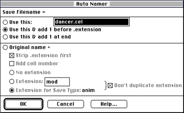
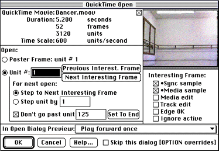

Figure 1: Display for specifying names for the cel files.

Figure 2: QuickTime Open dialog in DeBabelizer.
DeBabelizer saves the individual files into the directory you specify. You can then load the cels into Adobe Photoshop or DeBabelizer, using the 3DO CelReader Import plug-in to edit them as needed, and display them on the 3DO Station after you've made all desired changes.